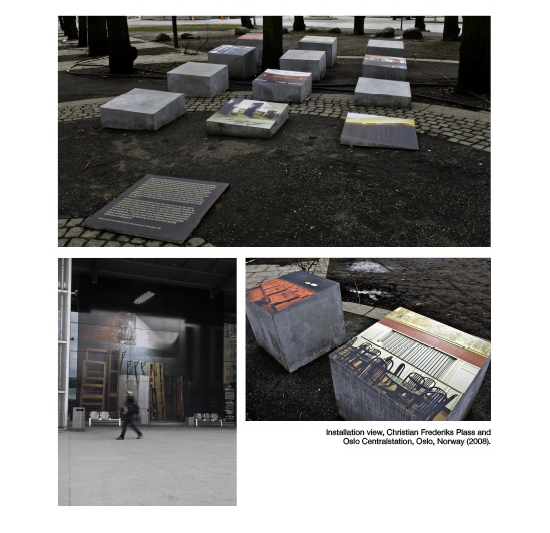
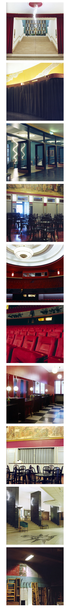

“Folketeaterbygningen” in Oslo is a symbol of an era in Norwegian history. Built during the 30 and 50’ties it represents the Norwegian Social Democracy coming into being. More specifically it was built to provide a theatre for the workers (Labour Union). After 4 years the theatre went bankrupt, and the Opera moved in, staying until today. Now, with the new Opera house rising in Bjørvika, the building was sold to a private entrepreneur. Meanwhile, the new Opera house seems to reflect the nation in a different era. Growing older, the Social democracy of Norway is turning self conscious; preoccupied with creating it’s image. Norway’s growing international consciousness are reflected in this iconic building; the facade is facing the waterfront - greeting visitors to the city.
By photographing “Folketeaterbygningen” in a sober documentary fashion, as if the building were brand new, I am hoping the project will reflect on both the fading ideological heritage, as well as point to the ideology behind current public projects like the new Opera house in Oslo.
|   |